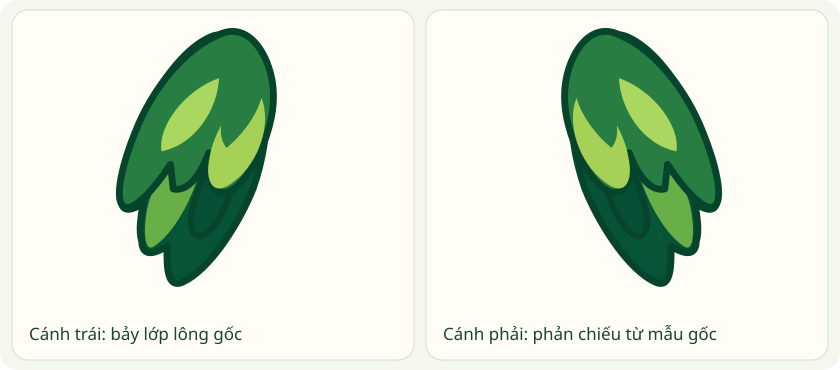
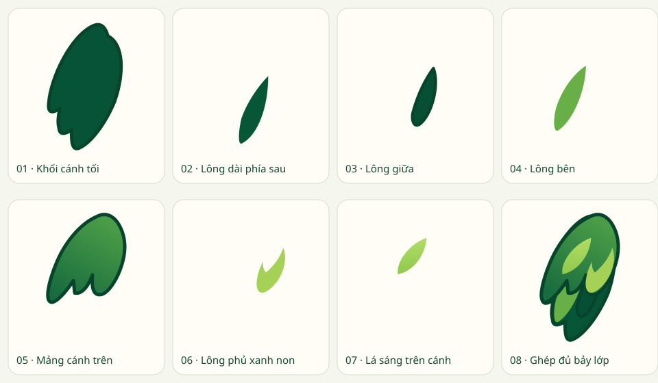

OLLIE / CÁNH LÁ / BUILD 08
Cánh gốc của Ollie trong mọi tư thế.
Cả tư thế cử chỉ và động tác cầm, nâng đồ đều dùng bảy lớp lông của mẫu front gốc. Hai bên cánh có màu phẳng, đầu lông nhọn và có hai lớp dài phía dưới. Cúp ăn mừng hiện trước cánh giữ. Xem đủ 19 cảnh và năm mốc mỗi vòng.
Năm khung xuất từ vòng lặp Rive sau khi hoàn tất chuyển trạng thái. Kéo để xem vai, nếp gập và điểm tiếp xúc qua từng pha.
Cấu trúc hai cánh
Cánh trái lấy trực tiếp đường Bézier từ mẫu gốc; cánh phải phản chiếu các đường đó. Tư thế thay góc và tỷ lệ đồng đều để chạm vật hoặc biểu lộ cảm xúc. Các lớp lông xanh non và đầu lông nhọn luôn giữ vị trí tương đối.

Cánh front gốc
Bốn cảnh chạy, mệt, reo vui và tràn năng lượng dùng cánh front gốc vì đường lông dang và hạ của chúng vẫn rõ. Sơ đồ này giữ để so tỷ lệ và bảng màu.

Ba điểm cần kiểm tra khi chỉnh tiếp
Vai nối liền thân · Đầu lông cong mềm, không gãy góc · Cánh chạm đúng đạo cụ ở cả đầu, giữa và cuối vòng.
Các tư thế chống cằm và ngáp chỉ thay cánh tham gia động tác. Cánh bên kia vẫn dùng mẫu đứng gốc. Khi ngủ thật, vẫy hoặc trở về biểu cảm cơ bản, rig tự trả lại cánh tương ứng.